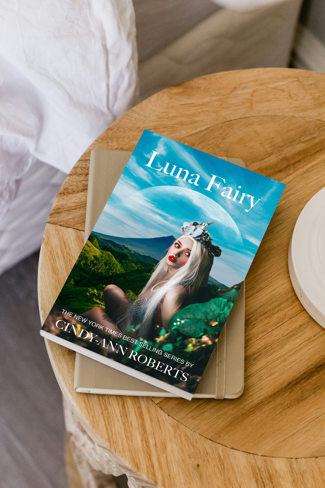

Luna Fairy Book Jacket
This project challenged me to design a magical book jacket inspired by fantasy and nature. My goal was to create a dreamy composition that combined natural landscapes with mystical elements to capture the spirit of the story.
Source Images


Design Process
Using Photoshop, I layered the mountain and ocean images to build a mystical landscape, then integrated the fairy and moon with blending effects. I adjusted colors, lighting, and textures to unify the composition and create a magical, otherworldly tone.
Project Goals
- Design a compelling, visually imaginative book cover
- Blend multiple photographic elements into a seamless composition
- Demonstrate digital illustration and Photoshop layering skills
Final Book Jacket
Key Takeaways
- Improved skills in compositing and creative storytelling
- Learned color grading and mood creation for book design
- Experience balancing imagination with readability and layout